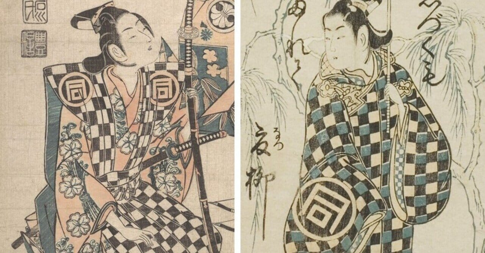

─ トリビア ─
「市松模様」の名前の由来は、
歌舞伎役者
だった

写楽『三世佐野川市松』
1741年、江戸中村座の舞台で──
人気歌舞伎役者
初代・佐野川市松（さのがわ いちまつ）
が、 白と紺の四角を組み合わせた袴を着て舞台に登場。
その斬新な模様が江戸の女性たちの間で大流行し、
いつしか彼の名前を取って
「市松模様」
と呼ばれるようになりました。
1741
江戸時代
佐野川市松が着用
→
江戸
庶民に大流行
着物・工芸品へ
→
現代
「日本らしい」
伝統文様として定着
→
2020
五輪エンブレム
として世界へ
スキャンダルから、
280年前の歌舞伎ファッション
へ回帰した物語。
07 / 16